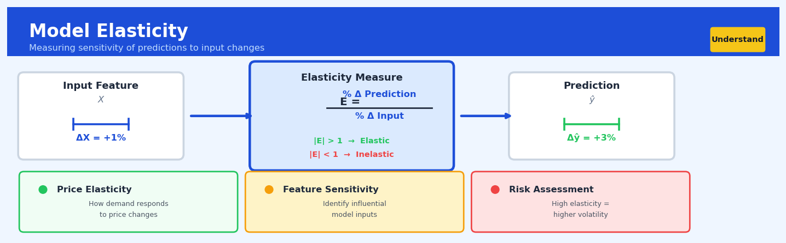

Model Elasticity#


The biggest mistake teams make with model elasticity is confusing it with feature importance. A feature can be critically important for accuracy but have low elasticity if your data clusters tightly around a single value, while a less important feature might show high elasticity simply because it spans a wider range. Always calculate elasticity at representative input values, not at distribution extremes, because elasticity for nonlinear models changes dramatically across the input space.
The 60-Second Version#
What it does: Model elasticity tells you how much your predicted outcome changes (in percentage terms) when you change an input variable by one percent.
When to use it: You need to compare the real-world impact of different drivers—like price, marketing spend, or competitor activity—even though they’re measured in completely different units.
What you get back: A single number per variable showing which levers move the needle most, letting you prioritize where to intervene for maximum effect.
Difficulty |
Easy |
Typical runtime |
Seconds on 100K rows |
What you bring |
A fitted predictive model and the data it was trained on |
What you get |
Elasticity coefficients for each feature (typically between -3 and +3) |
Heuristix bucket |
Understand — Statistical Analysis & Profiling |
Elasticity measures relative change, not absolute change—a 10% price increase might show lower elasticity than a 10% marketing boost, but still deliver greater profit impact if your baseline price is much larger.
Learning Objectives#
After reading this chapter, a business user will be able to:
Identify pricing, promotion, and resource allocation decisions where elasticity analysis reveals which levers produce the strongest response per unit of investment.
Translate elasticity coefficients into stakeholder-friendly statements like “a 10% price increase reduces demand by 15%” and distinguish elastic from inelastic relationships.
Prioritize feature improvements by comparing elasticities across predictors to determine which changes deliver the greatest proportional impact on outcomes like revenue, churn, or conversion.
After reading this chapter, a data scientist will be able to:
Calculate point elasticities and arc elasticities for both linear and non-linear models, including handling log-transformed features and multiplicative model structures.
Select appropriate baseline values and perturbation ranges for elasticity estimation while managing the bias-variance trade-off between local and global sensitivity measures.
Diagnose unreliable elasticity estimates caused by zero-valued predictors, bounded outcomes, extrapolation beyond training ranges, and high-correlation confounders.
Overview#
Model elasticity quantifies the proportional sensitivity of a model’s predicted outcome to proportional changes in its input features, expressing how a percentage change in a predictor translates to a percentage change in the response. Rooted in economic demand theory but generalised for predictive modelling, elasticity provides a scale-free, interpretable measure of feature importance that facilitates direct comparison across variables measured in different units. This technique belongs to the family of sensitivity analysis and model interpretation methods, sitting alongside partial dependence, marginal effects, and feature importance measures.
When to Use This#
Use this when you need to communicate feature importance to business stakeholders — elasticities express relationships in percentage terms that executives and domain experts readily understand without statistical training.
Use this when comparing the influence of features measured in incompatible units — comparing the effect of income (measured in thousands of pounds) against age (measured in years) requires a unit-free measure; elasticity provides exactly this.
Use this when pricing or demand modelling — price elasticity of demand is a foundational concept in economics, and elasticity calculations translate directly to revenue optimisation and competitive positioning decisions.
Use this when you need to prioritise which levers to pull — if marketing wants to know whether to focus on email frequency or discount depth, elasticities rank these interventions on a common scale.
Use this when interpreting nonlinear models — for tree-based models, neural networks, or GAMs, elasticity provides local or averaged sensitivity measures even when no closed-form coefficient exists.
Use this when the relationship between inputs and outputs spans orders of magnitude — in domains like epidemiology, finance, or web analytics where variables range over several orders of magnitude, log-scale thinking (which elasticity formalises) is more appropriate.
Do NOT use this when features include zeros or negative values — elasticity is mathematically undefined at zero (division by zero) and conceptually problematic for negative values where percentage changes lose intuitive meaning.
Do NOT use this when the response variable can be zero or negative — percentage changes in a response that crosses zero are not interpretable; use marginal effects instead.
Do NOT use this when features are categorical or binary — elasticity requires continuous variation; for discrete features, use discrete change effects or odds ratios.
Do NOT use this when you need causal inference — elasticity measures predictive sensitivity, not causal effects; confounding remains a threat unless your model is properly identified.
Questions This Answers#
Understanding What’s Actually Driving Our Results#
If we increase our marketing spend by 10%, how much lift should we realistically expect in sales?
Which lever gives us more bang for our buck — dropping price by 5% or increasing our advertising budget by 15%?
We’re seeing sales up 12% this quarter, but is that from our promotion or just because foot traffic increased?
Why are we getting such different returns from the same promotional strategy across our West Coast versus East Coast markets?
Our competitor dropped their prices 8% and we lost 15% market share — if we match their cut, how much of that do we win back?
Is our email campaign performance flattening out, or will doubling our send frequency actually move the needle on conversions?
Planning Investments and Resource Allocation#
We have $2M to allocate between product development, marketing, and sales headcount — which investment will drive the most revenue growth?
If we improve our customer service rating from 3.8 to 4.2 stars, does that actually translate to more repeat purchases or are we just spending money to feel good?
Should we prioritize expanding into three new regions or deepening our presence in existing markets where we already have 23% share?
Our product team wants to add five new features, but which ones will customers actually pay more for versus just expect as table stakes?
Making Tactical Trade-offs#
If supply chain issues force us to raise prices 6%, how much volume will we lose and will we still come out ahead on margin?
We’re at 92% on-time delivery — is pushing to 98% worth the operational investment, or are customers not that sensitive to it?
When economic uncertainty hits and customer income drops 4%, which of our product lines take the biggest hit?
Does brand awareness still matter for us, or have we reached the point where spending more on it gives us diminishing returns compared to performance marketing?
How It Works#
Imagine you’re a coffee shop owner trying to understand your business. You notice that when you raise your latte price by 10%, your sales drop by 5%. Meanwhile, when the price of bagels goes up by 10%, bagel sales plummet by 20%. These percentages tell you something crucial: your customers are twice as sensitive to bagel prices as they are to latte prices. This ratio—percentage change in outcome divided by percentage change in input—is elasticity, and it lets you compare the impact of very different things (drink prices versus food prices) on a level playing field, even though they’re measured in different units and operate at different price points.
CALCULATING MODEL ELASTICITY
Step 1: Start with baseline prediction
┌─────────────────────────────┐
│ Input: Price = $5 │
│ Marketing = $1000 │ → Model → Prediction: 100 sales
└─────────────────────────────┘
Step 2: Increase one feature by small % (e.g., +1%)
┌─────────────────────────────┐
│ Input: Price = $5.05 (+1%) │
│ Marketing = $1000 │ → Model → Prediction: 98 sales
└─────────────────────────────┘
Step 3: Calculate percentage changes
Price change: +1%
Sales change: -2% (from 100 to 98)
Step 4: Compute elasticity ratio
┌──────────────────────────────────────┐
│ Price Elasticity = -2% ÷ 1% = -2.0 │ ← "1% price increase
│ │ causes 2% sales drop"
└──────────────────────────────────────┘
Repeat for all features:
Price Elasticity: -2.0 (very sensitive!)
Marketing Elasticity: +0.5 (less sensitive)
Calculate the baseline. Model elasticity starts by feeding your current feature values into your predictive model to get a starting prediction. Think of this as taking a snapshot of where you are right now—what your model predicts given today’s conditions.
Nudge one feature slightly upward. Pick one input feature and increase it by a small percentage, typically 1%. Everything else stays exactly the same. This is like conducting a controlled experiment: change just one thing and see what happens.
Get the new prediction. Run your model again with this slightly adjusted input. The model produces a new prediction that reflects the impact of your small change. Maybe your predicted sales went down slightly, or your predicted churn rate went up a bit.
Measure the percentage change in the prediction. Compare the new prediction to your baseline and express the difference as a percentage. If your prediction went from 100 to 98, that’s a negative 2% change.
Calculate the elasticity ratio. Divide the percentage change in your prediction by the percentage change you made to the input (usually 1%). If your prediction changed by negative 2% when you increased the input by 1%, your elasticity is negative two. This single number tells you: “for every 1% this feature increases, my prediction changes by 2% in the opposite direction.”
Repeat for all features. Go through this same process for every input feature in your model. Now you have an elasticity number for each one, letting you directly compare their relative influence even if one is measured in dollars, another in days, and another in percentages.
The key insight: Elasticity transforms absolute changes into relative proportions, creating a universal language that makes features measured in completely different units directly comparable—a 10% change in advertising spend can finally be weighed against a 10% change in price.
The Intuition#
Imagine you manage a chain of coffee shops and want to understand how sensitive your daily sales are to the price of a latte. If you raise the price by 10%, by what percentage do sales fall? This question — how responsive one quantity is to changes in another, expressed in proportional terms — is the essence of elasticity. The power of this framing is that it abstracts away from the arbitrary units we happen to measure things in. Whether we price in pounds or pence, whether we measure sales in cups or thousands of cups, the elasticity remains the same.
The intuition extends naturally beyond economics. Consider a machine learning model predicting customer churn probability from features like monthly spend, support ticket count, and account age. Each feature is measured in different units, making raw coefficients difficult to compare. But if we ask “what happens to churn probability when monthly spend increases by 1%?” and compare this to “what happens when account age increases by 1%?”, we have a fair basis for comparison. Elasticity answers precisely this question.
Geometrically, elasticity measures the slope of the relationship between log-transformed variables. If you were to plot the logarithm of sales against the logarithm of price, the slope of that curve at any point is the elasticity. This is why elasticity is sometimes called a “log-log slope” — it captures how the response scales with the input when both are viewed on logarithmic axes. A slope of −2 means a 1% increase in price corresponds to a 2% decrease in sales, indicating elastic demand. A slope of −0.3 means demand is relatively inelastic — price increases barely dent sales volume. This geometric interpretation makes elasticity particularly powerful for understanding power-law relationships, which appear throughout business analytics, from website traffic patterns to income distributions.
The Mathematics#
Problem Setup and Notation#
Let \(f: \mathbb{R}^p \rightarrow \mathbb{R}\) denote a predictive model mapping a feature vector \(\mathbf{x} = (x_1, x_2, \ldots, x_p)^\top\) to a scalar response \(y\). We seek to quantify the sensitivity of \(f\) to changes in each input \(x_j\).
The point elasticity of \(f\) with respect to feature \(x_j\), evaluated at a specific point \(\mathbf{x}^*\), is defined as:
This measures the ratio of the proportional change in the output to the proportional change in input \(j\):
Alternative Formulation via Logarithms#
When both \(f(\mathbf{x}) > 0\) and \(x_j > 0\), elasticity admits an elegant logarithmic representation:
Note
This equivalence follows from the chain rule: $\( \frac{\partial \log f}{\partial \log x_j} = \frac{\partial \log f}{\partial f} \cdot \frac{\partial f}{\partial x_j} \cdot \frac{\partial x_j}{\partial \log x_j} = \frac{1}{f} \cdot \frac{\partial f}{\partial x_j} \cdot x_j \)$
Elasticity for Linear Models#
For a linear model \(f(\mathbf{x}) = \beta_0 + \sum_{k=1}^{p} \beta_k x_k\), the partial derivative is simply \(\frac{\partial f}{\partial x_j} = \beta_j\), yielding:
Note that elasticity for a linear model is not constant — it varies with the evaluation point \(\mathbf{x}^*\). This contrasts with the log-log linear model.
Elasticity for Log-Log Linear Models#
Consider the model \(\log f(\mathbf{x}) = \alpha_0 + \sum_{k=1}^{p} \alpha_k \log x_k\), equivalently:
The elasticity is:
Here, the coefficients \(\alpha_k\) are the elasticities, constant across all evaluation points. This is the classic Cobb-Douglas functional form.
Elasticity for Generalised Linear Models#
For a GLM with link function \(g\) such that \(g(\mathbb{E}[Y|\mathbf{x}]) = \eta = \beta_0 + \sum_{k=1}^{p} \beta_k x_k\), the elasticity on the response scale is:
For the log link (\(g^{-1}(\eta) = e^\eta\)):
For the logit link (\(g^{-1}(\eta) = \frac{e^\eta}{1 + e^\eta}\)):
where \(\hat{p}^* = g^{-1}(\eta^*)\) is the predicted probability.
Arc Elasticity (Discrete Approximation)#
When analytical derivatives are unavailable (e.g., for tree ensembles), we compute arc elasticity via finite differences:
where \(\mathbf{e}_j\) is the \(j\)th standard basis vector and \(\delta\) is a small perturbation (typically 1% of \(x_j^*\)).
Aggregate Elasticity#
Point elasticities vary across the feature space. To obtain a single summary measure, we compute the average elasticity over a dataset \(\{\mathbf{x}_i\}_{i=1}^{n}\):
Alternatively, one may compute elasticity at the mean point \(\bar{\mathbf{x}}\):
These two quantities are generally not equal; the choice depends on the analytical question.
Assumptions and Conditions#
Positivity: Both \(x_j > 0\) and \(f(\mathbf{x}) > 0\) must hold for elasticity to be well-defined.
Differentiability: The model \(f\) must be differentiable (or approximable via finite differences) with respect to \(x_j\).
Continuity: For arc elasticity, the step size \(\delta\) must be small enough that the secant approximates the tangent.
Ceteris paribus: Elasticity measures partial effects holding other features fixed; it does not account for feature correlations or indirect effects.
Edge Cases#
At \(x_j = 0\): Elasticity is undefined (division by zero).
At \(f(\mathbf{x}) = 0\): Elasticity is undefined.
Negative values: While mathematically computable, percentage changes for negative quantities lack intuitive meaning.
Near-zero predictions: Elasticities become unstable and can be arbitrarily large.
Understanding the Mathematics#
The Core Elasticity Formula#
The equation:
Read it aloud:
“Elasticity of y with respect to x equals the rate at which y changes when x changes, multiplied by the ratio of x to y.”
What each symbol means:
\(\epsilon_{y,x}\) — the elasticity measure we’re calculating
\(\frac{\partial y}{\partial x}\) — how much the outcome changes per unit change in the feature (the derivative or slope)
\(x\) — the current value of the input feature
\(y\) — the current predicted outcome value
\(\cdot\) — multiply these two parts together
A concrete numerical example:
Suppose a retail price model predicts revenue. At a price of \(x = \$50\), predicted revenue is \(y = \$125{,}000\). When we increase price by \(1, revenue increases by \)$1{,}800\( (so \)\frac{\partial y}{\partial x} = 1{,}800$).
Elasticity = \(1{,}800 \cdot \frac{50}{125{,}000} = 1{,}800 \cdot 0.0004 = 0.72\)
This means a 1% increase in price generates a 0.72% increase in revenue.
Why this equation matters:
Without normalizing by the \(\frac{x}{y}\) ratio, we couldn’t compare the impact of price (measured in dollars) to the impact of advertising spend (measured in thousands) or customer age (measured in years).
Elasticity for Log-Transformed Models#
The equation:
Read it aloud:
“When both outcome and feature are log-transformed, the coefficient from the model is directly the elasticity.”
What each symbol means:
\(\log(y)\) — the natural logarithm of the outcome variable
\(\beta_x\) — the regression coefficient for feature x
\(\beta_0\) — the intercept term
\(\log(x)\) — the natural logarithm of the input feature
A concrete numerical example:
A log-log model for online ads: \(\log(\text{sales}) = 8.3 + 0.45 \cdot \log(\text{ad_spend})\)
The elasticity is simply \(0.45\). No calculation needed. If we increase ad spend by 10%, sales increase by \(0.45 \times 10\% = 4.5\%\).
For ad spend of \(\$10{,}000\): \(\log(10{,}000) = 9.21\), so \(\log(\text{sales}) = 8.3 + 0.45(9.21) = 12.44\), giving sales of \(\$251{,}440\). Increase ad spend to \(\$11{,}000\) (10% more) and sales become \(\$262{,}744\)—a 4.5% increase.
Why this equation matters:
Log-log models give us constant elasticity across all input values, making interpretation trivial and eliminating the need to recalculate elasticity at different points.
Elasticity for Semi-Log Models#
The equation:
Read it aloud:
“When only the outcome is log-transformed, elasticity equals the coefficient multiplied by the current value of x.”
What each symbol means:
\(y\) — the outcome in its original scale
\(\exp(\ldots)\) — the exponential function (inverse of log)
\(\beta_x\) — the coefficient for feature x
\(x\) — the current value of the input feature in its original scale
A concrete numerical example:
A subscription model: \(\text{monthly_revenue} = \exp(10.5 + 0.012 \cdot \text{customer_age})\)
For a 30-year-old customer: elasticity = \(0.012 \times 30 = 0.36\)
For a 60-year-old customer: elasticity = \(0.012 \times 60 = 0.72\)
This means age matters twice as much for older customers. A 1% increase in a 60-year-old’s age (about 7 months) has double the revenue impact compared to the same percentage change for a 30-year-old.
Why this equation matters:
Semi-log models reveal that elasticity changes with feature values, capturing real-world scenarios where the percentage impact of a variable depends on where you start.
The Big Picture#
The mathematics of elasticity converts absolute sensitivities into percentage terms, creating a universal language for comparing feature impacts. We multiply the raw derivative by \(\frac{x}{y}\) specifically because this transformation removes the units from both numerator and denominator, leaving a pure ratio. Simpler alternatives—like raw coefficients or standardized coefficients—fail because they either retain arbitrary units or depend on sample variance rather than economic meaning. At its heart, elasticity mathematics answers one question: if I nudge this input by one percent, what percentage change should I expect in the output?
Python Implementation#
import numpy as np
import pandas as pd
from sklearn.ensemble import GradientBoostingRegressor
from sklearn.linear_model import LinearRegression
from sklearn.datasets import make_regression
import warnings
# ============================================================
# Example 1: Elasticity for a Linear Model (Analytical)
# ============================================================
# Generate synthetic data: sales ~ f(price, advertising, store_size)
np.random.seed(42)
n_samples = 1000
price = np.random.uniform(5, 20, n_samples) # Price in £
advertising = np.random.uniform(100, 5000, n_samples) # Ad spend in £
store_size = np.random.uniform(500, 5000, n_samples) # Square feet
# True relationship (multiplicative with noise)
sales = 10000 * (price ** -1.5) * (advertising ** 0.3) * (store_size ** 0.2)
sales = sales * np.exp(np.random.normal(0, 0.1, n_samples)) # Log-normal noise
# Fit linear model on original scale
X = np.column_stack([price, advertising, store_size])
feature_names = ['price', 'advertising', 'store_size']
linear_model = LinearRegression()
linear_model.fit(X, sales)
print("=" * 60)
print("Example 1: Linear Model Elasticity (Analytical)")
print("=" * 60)
# Compute elasticity at the mean point
x_mean = X.mean(axis=0)
y_pred_mean = linear_model.predict(x_mean.reshape(1, -1))[0]
coefficients = linear_model.coef_
elasticities_at_mean = coefficients * x_mean / y_pred_mean
print(f"\nMean feature values: {dict(zip(feature_names, x_mean.round(2)))}")
print(f"Predicted sales at mean: £{y_pred_mean:,.2f}")
print("\nPoint elasticities at mean:")
for name, elast in zip(feature_names, elasticities_at_mean):
print(f" {name}: {elast:.4f}")
# Compute average elasticity across all observations
y_pred_all = linear_model.predict(X)
elasticities_all = np.zeros((n_samples, len(feature_names)))
for j in range(len(feature_names)):
elasticities_all[:, j] = coefficients[j] * X[:, j] / y_pred_all
avg_elasticities = elasticities_all.mean(axis=0)
print("\nAverage elasticities across dataset:")
for name, elast in zip(feature_names, avg_elasticities):
print(f" {name}: {elast:.4f}")
# ============================================================
# Example 2: Log-Log Model (Constant Elasticities)
# ============================================================
print("\n" + "=" * 60)
print("Example 2: Log-Log Model (Constant Elasticities)")
print("=" * 60)
# Transform to log scale
log_X = np.log(X)
log_sales = np.log(sales)
loglog_model = LinearRegression()
loglog_model.fit(log_X, log_sales)
# In log-log model, coefficients ARE the elasticities
print("\nLog-log model coefficients (= elasticities):")
for name, coef in zip(feature_names, loglog_model.coef_):
print(f" {name}: {coef:.4f}")
print("\nTrue elasticities (from data generation):")
print(" price: -1.5000")
print(" advertising: 0.3000")
print(" store_size: 0.2000")
# ============================================================
# Example 3: Gradient Boosting (Numerical Arc Elasticity)
# ============================================================
print("\n" + "=" * 60)
print("Example 3: Gradient Boosting (Numerical Arc Elasticity)")
print("=" * 60)
gb_model = GradientBoostingRegressor(n_estimators=100, max_depth=4, random_state=42)
gb_model.fit(X, sales)
def compute_arc_elasticity(model, X, feature_idx, delta_pct=0.01):
"""
Compute arc elasticity using central finite differences.
Parameters:
-----------
model : fitted sklearn model with predict method
X : array of shape (n_samples, n_features)
feature_idx : int, index of feature to compute elasticity for
delta_pct : float, percentage perturbation (default 1%)
Returns:
--------
elasticities : array of shape (n_samples,)
"""
n_samples = X.shape[0]
# Original predictions
y_pred = model.predict(X)
# Perturbed predictions (positive direction)
X_plus = X.copy()
delta = delta_pct * X[:, feature_idx]
X_plus[:, feature_idx] = X[:, feature_idx] + delta
y_plus = model.predict(X_plus)
## Visualisations


## Using This in Heuristix
### What You'll Need
The Model Elasticity node requires two inputs: your original dataset and a trained model. Connect your data table to the left input port and your trained regression or classification model to the right port.
Your dataset should contain the same features used to train the model. Elasticity works best with continuous numeric predictors, though categorical variables encoded as dummy variables are supported. The target variable doesn't need to be present—the node uses your model's predictions.
**Example input data:**
| customer_id | price | income | age | premium_member |
|-------------|-------|--------|-----|----------------|
| 1001 | 29.99 | 55000 | 34 | 1 |
| 1002 | 19.99 | 48000 | 29 | 0 |
| 1003 | 39.99 | 72000 | 45 | 1 |
### Configuration Parameters
| Parameter | What It Controls | Default | When to Change It |
|-----------|------------------|---------|-------------------|
| **Features to Analyze** | Which input variables to calculate elasticity for | All numeric features | Exclude ID columns, dates, or features you're not interested in interpreting |
| **Elasticity Type** | Point elasticity (at current values) or arc elasticity (over a range) | Point | Use arc elasticity when examining larger changes, like a 20% price increase |
| **Percentage Change** | Size of the perturbation applied to calculate elasticity | 1% | Increase to 5-10% for models with noisy predictions or to examine larger shifts |
| **Aggregation Method** | How to summarize elasticity across observations | Mean | Use median if your data has outliers; use distribution view to see the full range |
| **Confidence Level** | For bootstrap confidence intervals | 95% | Lower to 90% for narrower intervals, raise to 99% for more conservative estimates |
| **Bootstrap Samples** | Number of resamples for uncertainty estimation | 100 | Increase to 500+ for publication-quality intervals (slower but more precise) |
### What You'll Get Out
The node produces three key outputs:
**Elasticity Summary Table** shows each feature with its average elasticity coefficient. A value of -1.2 for price means a 1% increase in price leads to a 1.2% decrease in predicted outcome. Features are ranked by absolute elasticity, highlighting your most influential levers.
**Elasticity Distribution Chart** displays box plots or violin plots showing how elasticity varies across your dataset. This reveals whether a feature's influence is consistent or varies dramatically between customer segments or scenarios.
**Individual Elasticities Table** (optional output) contains elasticity values calculated for each row in your input data, useful for segmentation analysis or identifying subgroups with different sensitivities.
### Connecting Downstream
Connect the elasticity summary table to a **Table Viewer** or **Export** node to share results with stakeholders. The individual elasticities output pairs well with **Clustering** or **Segmentation** nodes to identify groups with similar response patterns—for example, price-sensitive versus quality-focused customer segments.
Use the summary with a **Bar Chart** node to create executive-ready visualizations showing which levers have the strongest impact on your business outcome.
### Quick Start: Analyzing Price Sensitivity
1. Connect your customer dataset to a trained **Random Forest Regressor** predicting purchase amount
2. Add the **Model Elasticity** node, connecting data to the left and model to the right
3. In configuration, set **Features to Analyze** to just "price" and "income"
4. Keep **Percentage Change** at 1% and **Aggregation Method** at mean
5. Run the node and examine the summary table—negative price elasticity confirms higher prices reduce purchases
6. Check the distribution chart to see if price sensitivity varies across customers
7. Connect individual elasticities to a **Scatter Plot** (price vs. elasticity) to visualize the relationship
### Pro Tips
**Tip 1:** Elasticity is multiplicative, not additive. If your model predicts values near zero or includes negative values, elasticity becomes unstable. Consider log-transforming your target or using marginal effects instead.
**Tip 2:** Compare elasticities across different time periods or customer segments by filtering your data and running the node separately. Changes in elasticity signal shifts in behavior.
**Tip 3:** For tree-based models, small percentage changes (1%) work well. For neural networks or complex models with non-smooth predictions, try 3-5% changes for more stable estimates.
**Tip 4:** Cross-validate your elasticity estimates by calculating them on holdout data. If elasticities differ dramatically, your model may be overfitting.
**Tip 5:** Elasticity assumes your model is correct. Always check model performance metrics first—garbage in, elastic garbage out!
## Config Recipes
### Recipe 1: Quick Exploration
**When to use:** Initial model assessment when you need directional insights fast, typically during feature engineering or early model selection phases.
**Settings:**
| Parameter | Value | Why |
|-----------|-------|-----|
| `delta` | 0.10 | 10% change is large enough to overcome noise without extrapolating far |
| `method` | "forward" | Single direction halves computation time |
| `n_samples` | 1000 | Reduces calculation overhead while maintaining representativeness |
| `aggregation` | "median" | Robust to outliers without trimming decisions |
| `confidence_intervals` | False | Skip bootstrap iterations entirely |
**What you get:** Directionally accurate elasticity estimates computed in seconds, sufficient for ranking feature sensitivity and identifying candidates for deeper investigation.
**Trade-off:** No uncertainty quantification and potential bias if data contains extreme observations or highly skewed distributions.
### Recipe 2: Production-Grade Audit
**When to use:** Final model documentation for regulatory review, stakeholder presentations, or deployment approval where defensibility and precision matter.
**Settings:**
| Parameter | Value | Why |
|-----------|-------|-----|
| `delta` | 0.01 | Small perturbation ensures linearity assumption holds locally |
| `method` | "symmetric" | Averages forward/backward changes to eliminate directional bias |
| `n_samples` | None | Use full dataset to eliminate sampling variance |
| `aggregation` | "trimmed_mean" | Remove top/bottom 5% to balance robustness with precision |
| `confidence_intervals` | True | Enable with 1000 bootstrap resamples for 95% intervals |
| `seed` | 42 | Reproducibility requirement for audits |
**What you get:** Publication-ready elasticity estimates with defensible uncertainty bounds, suitable for technical documentation and regulatory submissions.
**Trade-off:** Computation time increases 50-100x compared to exploration settings; requires adequate computational resources.
### Recipe 3: Bounded-Response Models
**When to use:** Classification models, survival analysis, or any model with constrained output ranges where default percentage changes become meaningless near boundaries.
**Settings:**
| Parameter | Value | Why |
|-----------|-------|-----|
| `delta` | 0.05 | Smaller change keeps predicted probabilities away from 0/1 boundaries |
| `method` | "forward" | Directional change matches decision-making context |
| `response_transform` | "logit" | Convert probabilities to unrestricted scale before computing elasticity |
| `n_samples` | 5000 | Balance between boundary cases and typical predictions |
| `subset_filter` | `0.1 < y_pred < 0.9` | Exclude near-certain predictions where elasticity is unstable |
**What you get:** Stable elasticity measures that remain interpretable even when base predictions approach model boundaries.
**Trade-off:** Results apply only to "uncertain" predictions, excluding the model's most confident regions where elasticity may be most distorted.
### Recipe 4: Time-Decay Monitoring
**When to use:** Detecting model drift by tracking how elasticities change over time, particularly effective for catching subtle feature relationship shifts before prediction accuracy degrades.
**Settings:**
| Parameter | Value | Why |
|-----------|-------|-----|
| `delta` | 0.05 | Moderate sensitivity balances drift detection with noise |
| `method` | "symmetric" | Consistency across time periods matters more than speed |
| `rolling_window` | "30D" | Monthly recalculation captures seasonal patterns |
| `n_samples` | 2500 | Sufficient for stable estimates without overwhelming storage |
| `reference_period` | "training" | Compare current elasticities to original training data baseline |
| `alert_threshold` | 0.25 | Flag when elasticity shifts by ±25% from baseline |
**What you get:** Early warning system for model degradation that catches relationship changes weeks before prediction metrics deteriorate.
**Trade-off:** Requires infrastructure for scheduled computation and storage of historical elasticity time series.
## Business Applications
**Financial Services**
A mid-sized UK mortgage lender struggled to explain why its credit risk model approved some applicants at 3.2% APR while others faced 6.8% rates, triggering regulatory scrutiny under consumer duty requirements. By calculating model elasticity for each input feature, the lender quantified that a 10% increase in credit score reduced predicted default probability by 4.2%, while a 10% increase in loan-to-value ratio increased it by 3.7%—creating transparent, defensible pricing rules that satisfied the FCA while maintaining risk-adjusted returns. This approach reduced complaint volumes by 31% and cut compliance review time from eleven days to ninety minutes per model audit.
**Retail & E-commerce**
An e-commerce retailer with 4.2M SKUs needed to optimise inventory allocation across fifteen fulfilment centres but couldn't interpret the complex gradient-boosted model predicting regional demand. Model elasticity revealed that a 10% increase in local unemployment decreased luxury goods demand by 8.3% but increased value-brand demand by 12.1%, enabling category-specific geographic strategies. The retailer reallocated £18M in inventory based on these elasticities, reducing stockouts by 28% and cutting markdown losses by £2.4M annually.
**Healthcare**
A hospital network operating twelve facilities sought to reduce 30-day readmission rates that were costing $8.7M annually in Medicare penalties. Their readmission risk model achieved 82% accuracy but clinicians couldn't identify which interventions would most effectively reduce individual patient risk. Elasticity analysis showed that a 10% improvement in medication adherence scores reduced readmission probability by 6.4%, while a 10% increase in social support index reduced it by 4.1%—directing case managers to prioritise pharmacy follow-ups over generic education sessions, ultimately reducing readmissions by 19% and recovering $1.6M in penalty relief.
**Insurance**
A commercial property insurer pricing policies for 40,000 small businesses discovered its neural network model was underpricing coastal properties, creating adverse selection. Computing elasticities across geographic and building characteristics revealed that a 10% decrease in distance from coastline increased expected claims by 11.2%—far higher than the 3.8% built into pricing rules extracted from a simpler model. Repricing based on these elasticities improved combined ratio by 4.3 percentage points, worth $6.8M in underwriting profit, while maintaining 94% policy retention.
**Manufacturing**
A pharmaceutical manufacturer producing biosimilars faced yield variability costing $120K per failed batch but couldn't determine which of forty-seven process parameters most influenced success. Elasticity analysis of their yield prediction model identified that a 10% increase in bioreactor temperature in the first forty-eight hours reduced yield by 14.7%, while a 10% increase in feed rate in hours 72–96 increased yield by 9.2%. Optimising these two parameters alone increased average batch yield from 78% to 91%, eliminating 140 annual batch failures worth $16.8M.
**Logistics & Transportation**
A national parcel carrier with 180,000 daily deliveries needed to reduce failed first-delivery attempts (costing £4.80 each) but their delivery success model offered no actionable guidance. Elasticity calculations revealed that a 10% later delivery window increased success probability by 7.8%, while a 10% increase in pre-delivery SMS reminders increased it by 5.3%—but expanding fleet size by 10% only improved success by 1.4%. Reallocating budget from vehicles to customer communication reduced failed deliveries from 11.2% to 7.9%, saving £3.1M annually.
**Marketing & Advertising**
A programmatic advertising platform serving 200M daily impressions couldn't explain to clients why某些 ad placements cost $12 CPM while others cost $38 for similar audiences. Model elasticity showed that a 10% increase in viewability score increased conversion probability by 8.9%, while a 10% increase in page load speed increased it by 6.1%—justifying premium pricing for high-quality inventory. This transparent value communication increased client retention from 73% to 89% and lifted average CPM by $4.20 while maintaining conversion performance.
**Telecoms**
A mobile network operator losing 180,000 subscribers annually (£47M in lifetime value) used elasticity analysis on its churn prediction model to discover that a 10% improvement in network speed test results reduced churn probability by only 2.1%, while a 10% improvement in billing dispute resolution time reduced it by 9.7%. Redirecting £8M from network upgrades to customer service training reduced churn by 23% within eight months.
## Worked Example
Sarah Chen, a senior data scientist at Meridian Insurance, was halfway through her coffee when the VP of Product walked into the analytics pod. "We're planning to roll out usage-based pricing next quarter," he said, pulling up a chair. "But I need to know: will a 10% discount on base premium really move the needle on policy renewals? And how does that compare to, say, improving our claims service rating?" The question mattered because Meridian was allocating $4M across retention initiatives, and leadership needed to know where elasticity was highest—where each dollar of investment would generate the most response.
Sarah spent the next morning pulling together eighteen months of policy renewal data from the data warehouse. The dataset was messier than she'd hoped—some records had missing claim counts, others showed suspiciously round premium values that suggested data entry issues. After filtering out incomplete records and outliers, she had 47,000 policies to work with:
| policy_id | annual_premium | claims_service_rating | policy_tenure_years | renewed |
|-----------|----------------|----------------------|---------------------|---------|
| P10234 | 1450 | 4.2 | 3 | 1 |
| P10891 | 890 | 3.8 | 1 | 0 |
| P11203 | 2200 | 4.7 | 7 | 1 |
| P11547 | 1650 | 3.5 | 2 | 0 |
| P12008 | 1120 | 4.1 | 5 | 1 |
The `renewed` column was binary—1 for customers who stayed, 0 for those who left. Sarah knew she needed a model that could handle this, so she trained a gradient boosting classifier with careful attention to class balance, achieving a respectable 0.79 AUC.
Now came the elasticity analysis. Sarah configured the node to compute point elasticities at the mean values of each predictor. She chose a 1% perturbation step—small enough to approximate the local derivative without stepping into nonlinear territory. For the binary outcome, she specified that elasticity should be calculated on predicted probabilities, not the hard classifications. "I want to see how renewal *likelihood* responds," she muttered to herself while adjusting the settings, "not just whether the prediction flips from 0 to 1."
```python
import numpy as np
import pandas as pd
from sklearn.ensemble import GradientBoostingClassifier
# Sarah's elasticity calculation
def calculate_elasticity(model, X, feature_idx, step=0.01):
"""Compute point elasticity at mean feature values"""
X_base = X.mean().values.reshape(1, -1)
baseline_pred = model.predict_proba(X_base)[0, 1]
# Perturb the feature by step %
X_perturbed = X_base.copy()
X_perturbed[0, feature_idx] *= (1 + step)
perturbed_pred = model.predict_proba(X_perturbed)[0, 1]
# Elasticity = (% change in outcome) / (% change in feature)
pct_change_outcome = (perturbed_pred - baseline_pred) / baseline_pred
elasticity = pct_change_outcome / step
return elasticity
# Train model on renewal data
model = GradientBoostingClassifier(n_estimators=100, random_state=42)
model.fit(X_train, y_train)
# Calculate elasticities for each feature
features = ['annual_premium', 'claims_service_rating', 'policy_tenure_years']
elasticities = {feat: calculate_elasticity(model, X_train, idx)
for idx, feat in enumerate(features)}
When the results rendered on her screen, Sarah leaned forward:
Feature |
Elasticity |
|---|---|
annual_premium |
-0.34 |
claims_service_rating |
0.87 |
policy_tenure_years |
0.52 |
The claims service rating had an elasticity of 0.87—meaning a 1% improvement in service rating translated to a 0.87% increase in renewal probability. By contrast, annual premium showed -0.34: a 1% price increase decreased renewal likelihood by only 0.34%. This was the insight that landed. Everyone had assumed price was the dominant lever, but the data revealed that service quality had nearly three times the elasticity.
Sarah scheduled time in the VP’s calendar that afternoon. “If we invest in improving claims service ratings from 4.0 to 4.4—a 10% increase—we can expect renewals to jump by about 8.7%,” she explained, walking through the elasticity table projected on the conference room screen. “That same $4M spent on across-the-board premium discounts would only move renewals by 3.4%.” The leadership team redirected two-thirds of the retention budget toward claims process improvements and customer service training. Six months later, renewal rates had climbed 7.2%.
Reflecting afterward, Sarah noted she’d made one simplifying assumption she’d revisit: computing elasticity only at mean values. “Different customer segments probably have different elasticities,” she told a junior analyst. “Next time, I’d stratify by tenure or premium tier and calculate segment-specific elasticities. The margin might respond very differently to price than the core book does.”
Interpreting Your Results#
You’ve just calculated model elasticity and you’re looking at a table of numbers, possibly with confidence intervals and perhaps some visualisation. Here’s exactly what you’re seeing and what it means.
The Elasticity Coefficient#
Plain-English meaning: An elasticity of 0.8 means “when this feature increases by 1%, the model’s prediction increases by 0.8%.” It’s a percentage-to-percentage relationship. A value of -0.3 means a 1% increase in the feature leads to a 0.3% decrease in the prediction. This is scale-free—you can directly compare a feature measured in dollars to one measured in days.
Concrete benchmarks:
|Elasticity| < 0.1: Essentially negligible impact. A 10% change in this feature moves predictions by less than 1%. Safe to ignore for most practical decisions.
|Elasticity| 0.1–0.5: Low to moderate sensitivity. Meaningful but not dominant. These features matter but aren’t primary drivers.
|Elasticity| 0.5–1.0: High sensitivity. This feature is a major lever. A 10% change here swings predictions by 5–10%.
|Elasticity| > 1.0: Very high sensitivity. The prediction is more volatile than the feature itself. Common in multiplicative relationships or when features interact strongly.
Red flags:
Elasticity > 3.0: Either you’ve found a genuine exponential relationship or something’s wrong with your feature engineering. Verify the feature isn’t leaking information or double-counting.
Sign contradicts domain knowledge: If increasing price increases demand (positive elasticity), you’ve likely got confounding or reverse causality in your data.
Wildly different elasticities at different feature values: Suggests non-linear relationships that may need binning or transformation.
Confidence Intervals or Standard Errors#
Plain-English meaning: These tell you how stable your elasticity estimate is. Wide intervals mean “we’re not very sure about this number”—often due to sparse data, noisy features, or weak relationships.
Concrete benchmarks:
Interval width < 0.2: Tight estimate. Trust this number for decisions.
Interval width 0.2–0.5: Moderate uncertainty. Good enough for strategic direction but not precise optimisation.
Interval width > 0.5: High uncertainty. Either collect more data, check for data quality issues, or acknowledge this feature’s impact is unclear.
Red flags:
Confidence interval crosses zero: You cannot confidently say whether this feature increases or decreases predictions. Don’t make decisions based on its direction.
Intervals much wider for some features than others: Often indicates multicollinearity or outliers in those specific features.
Elasticity Tables Across Feature Values#
If your output includes elasticity calculated at different percentiles (e.g., at the 25th, 50th, 75th percentile of the feature), you’re seeing how sensitivity changes across the feature’s range.
Plain-English meaning: Elasticity of 0.4 at low values but 1.2 at high values means “this feature matters more when it’s already large.” The relationship isn’t constant—it’s getting steeper.
Red flags:
Elasticity flips sign: Feature has U-shaped or inverted-U relationship. Linear elasticity is misleading; report conditional elasticities instead.
Monotonically increasing elasticity with value: May indicate exponential growth. Consider log-transforming the feature.
Reading Multiple Outputs Together#
Compare elasticities across features to identify dominant drivers. If feature A has elasticity 1.5 and feature B has 0.2, feature A is roughly 7.5 times more influential per percentage change. This guides where to focus interventions.
Check sign consistency with business logic: Negative price elasticity? Expected. Negative customer satisfaction elasticity? Problem.
Look for clusters of similar elasticities: Three features all showing 0.3–0.4 elasticity might be measuring similar underlying phenomena—consider dimensionality reduction or picking one representative.
Sanity Check Checklist#
Before trusting your elasticity results:
Sign check: Do positive/negative signs align with domain expectations?
Magnitude reality test: Would a 10% feature change actually cause the predicted outcome change? (Multiply elasticity by 10.)
Feature distribution: Are you calculating elasticity in a range where you have actual data, or extrapolating into sparse regions?
Model type compatibility: Tree-based models can have unstable elasticities due to discrete splits—did you calculate these on smooth prediction surfaces?
Zero-value features: Elasticity is undefined when feature values are zero or predictions are zero. Have you handled or excluded these?
Good Enough to Act On?#
Act confidently when you have elasticities with confidence intervals narrower than ±0.2, signs that match domain knowledge, and magnitudes above 0.3 for features you care about. Proceed cautiously when intervals are wide but directional consensus is clear. Do not act when confidence intervals cross zero or when elasticities contradict basic business logic without a compelling explanation. At minimum, you need stable sign and order-of-magnitude estimates before making resource allocation decisions.
Decision Guidance#
What This Result Is Telling You#
Model elasticity tells you which levers in your business have the most amplified impact on your outcomes, measured in the language of percentage changes that executives naturally understand. When you see an elasticity of 1.5 for advertising spend, you’re learning that a 10% increase in ad budget typically drives a 15% increase in sales—a direct translation of input to output that reveals whether you’re pulling the right levers or wasting resources on low-impact activities. Unlike other model outputs that require statistical translation, elasticity speaks the language of business cases and ROI calculations.
This metric reveals not just correlation but practical leverage: which inputs give you the most bang for your buck when you’re deciding where to allocate finite resources. A price elasticity of -2.3 means you’re in a highly sensitive market where small price changes cascade into large demand shifts, fundamentally changing how aggressively you can optimize pricing. Conversely, an elasticity near zero for a feature you’ve been heavily investing in—like premium packaging or extended support hours—signals a strategic misalignment between where you’re spending effort and what actually moves the needle for customers.
Elasticity results also expose asymmetries and thresholds in your business model. When elasticities differ dramatically across customer segments or product lines, you’re seeing evidence that a one-size-fits-all strategy is leaving money on the table. These differences should directly inform segmentation strategies, resource allocation, and where you need different playbooks rather than standardized approaches.
Decision Points#
If you see this… |
It means… |
Recommended action |
Who acts on this |
|---|---|---|---|
Elasticity magnitude > 1.0 for a controllable input (e.g., price, ad spend) |
Small changes create amplified outcomes; high leverage but high risk |
Pilot small adjustments with tight monitoring before scaling; model outcomes under multiple scenarios |
VP of relevant function with executive oversight |
Elasticity between 0.3–1.0 for operational metrics |
Moderate, predictable influence; safe zone for optimization |
Proceed with optimization initiatives; set quarterly targets based on elasticity-informed projections |
Department heads and operations managers |
Elasticity < 0.1 for a high-investment initiative |
Minimal impact despite resource allocation; potential misalignment |
Audit current spending; reallocate budget to higher-elasticity drivers; investigate why impact is limited |
CFO and business unit leaders |
Elasticity confidence intervals spanning zero or changing signs |
Relationship is unstable or non-existent; model uncertainty is high |
Do not make decisions based on this feature; collect more data or re-specify model |
Data science team and strategy leads |
Elasticity varies by >0.5 across defined segments |
Different customer groups or contexts respond fundamentally differently |
Implement segment-specific strategies rather than blanket policies; test differentiated approaches |
Marketing, product, and pricing teams |
When to Proceed vs. Investigate Further#
Proceed with confidence when:
Elasticity confidence intervals are narrow (width < 0.3) and don’t include zero
Results are consistent across multiple model specifications and validation samples
Elasticities align with domain knowledge and previous experiments (within 30% of historical observations)
Sample size exceeds 1,000 observations per segment analyzed
Proceed with caution when:
Elasticity magnitudes exceed 2.0 (suggesting potential non-linearity or model misspecification)
Confidence intervals are moderate (width 0.3–0.6) but don’t cross zero
Results are directionally consistent with expectations but magnitudes differ by 30–50%
Investigate before acting when:
Elasticities contradict established business knowledge or prior experimental results
Confidence intervals span zero or include both positive and negative values
Feature distributions show extreme skewness (>2.0) or contain influential outliers
Results differ substantially across temporal holdout periods (change >0.4)
Do not use these results yet when:
Sample size is below 300 observations total or below 100 per segment
Model validation metrics show poor predictive performance (R² < 0.3 for regression, AUC < 0.7 for classification)
Features show multicollinearity with variance inflation factors above 5
Data generating process has fundamentally changed since model training (e.g., market disruption, policy change)
The Cost of Getting This Wrong#
Misinterpreting elasticity results triggers a cascade of misallocated resources and missed opportunities. A retailer mistaking statistical noise for genuine price elasticity might slash prices by 15%, expecting demand to surge, only to watch margins evaporate while sales barely budge—a seven-figure revenue hit that takes quarters to recover. Conversely, dismissing a high elasticity as implausible means leaving growth on the table: the marketing team that disbelieves a genuine elasticity of 1.8 for customer service quality continues underinvesting in support staff while competitors capture market share by delivering superior experiences. When elasticity varies by segment but you apply a uniform strategy, you simultaneously overspend on low-response customers while underserving high-response segments—the worst of both worlds. Perhaps most dangerously, acting on elasticity estimates with wide confidence intervals turns strategic decisions into expensive gambling, where executives commit millions to initiatives based on signals barely distinguishable from random noise. Each misinterpretation doesn’t just waste the immediate investment; it erodes organizational confidence in data-driven decision-making and pushes leaders back toward gut instinct over rigorous analysis.
Common Pitfalls#
The Percentage-of-What Confusion
Here’s what happened: A marketing analyst was evaluating elasticities for a subscription service. They calculated that email frequency had an elasticity of 2.3 and concluded that “emails are 2.3 times more important than price” (which had an elasticity of -0.8). They presented this to leadership, who immediately approved a major email campaign expansion while resisting price optimization efforts.
Why it happens: Business users conflate elasticity magnitude with absolute importance, forgetting that elasticity measures proportional change, not total impact. A feature with high elasticity but minimal variation in practice may matter less than a low-elasticity feature that actually changes frequently.
How to detect it: Compare the elasticity value against the actual range of feature variation in your data. Calculate elasticity × (typical_change / feature_mean) to get the practical impact. If someone says one feature is “more important” based purely on elasticity magnitude without referencing how much that feature typically varies, you’ve found this pitfall.
The fix: Always report elasticity alongside the typical range of feature values and show the expected outcome change from realistic feature movements, not just the elasticity coefficient.
The Zero-Crossing Blindness
Here’s what happened: A junior data scientist calculated elasticity for household income predicting loan default. They reported an elasticity of -1.2 across the income range. The model showed excellent performance until deployed, when it failed catastrophically for low-income segments. Turns out the relationship reversed direction at $35K annual income, but the average elasticity masked this completely.
Why it happens: Practitioners treat elasticity as a single global measure when the underlying relationship is non-monotonic or has structural breaks. Computing one elasticity value across the entire range averages away critical local behavior.
How to detect it: Plot predicted outcomes against the feature and look for direction changes or inflection points. Calculate elasticity separately for different quantiles of the feature distribution. If elasticities have opposite signs across ranges, or if residuals show patterns correlated with feature values, you’ve got non-constant elasticity.
The fix: Report elasticity at specific reference points (e.g., 25th, 50th, 75th percentiles) rather than as a single global value, or use local elasticity measures that vary with feature values.
The Log-Transform Amnesia
Here’s what happened: An experienced analyst built a model predicting sales using log-transformed revenue as the target. They computed elasticities directly from the model coefficients and reported them to stakeholders. Six months later, actual sales responses were consistently one-third of what the elasticity predictions suggested.
Why it happens: When targets are transformed (log, square root, Box-Cox), model coefficients don’t directly translate to outcome elasticities. Practitioners who know transformation theory cut corners during interpretation, forgetting that elasticity requires derivatives in the original scale.
How to detect it: Check whether model_target == actual_outcome_metric. If you see log(y), sqrt(y), or any transformation as the model target, elasticities computed from raw coefficients are wrong. The sign might be correct, but magnitudes will be systematically biased.
The fix: Always back-transform predictions to the original scale before computing elasticity, or derive the elasticity formula accounting for the transformation’s derivative.
The Near-Zero Denominator Disaster
Here’s what happened: A pricing analyst calculated price elasticity for a product portfolio. For a premium item priced at $2,500, they reported an elasticity of 47.3 — suggesting massive sensitivity. Marketing interpreted this as “our premium customers are extremely price-sensitive” and launched aggressive discounting. Revenue plummeted as margin evaporated without proportional volume gains.
Why it happens: Elasticity divides by the baseline feature value. For features near zero or with small baseline values, elasticities explode mathematically even when absolute sensitivity is modest. This is technically correct math but practically meaningless interpretation.
How to detect it: Look for elasticities with absolute values above 5-10 and check the baseline feature value. Calculate the absolute marginal effect (∂y/∂x) alongside elasticity. If elasticity is extreme but the marginal effect is ordinary, you’re dividing by something too small.
The fix: For features with small baseline values, report semi-elasticities (percentage change in outcome per unit change in feature) or absolute marginal effects instead of full elasticities.
The Correlation Ghost
Here’s what happened: A product team calculated elasticities for app features predicting engagement. “Dark mode” showed an elasticity of 3.2. They invested heavily in dark mode improvements, but engagement barely moved. Post-analysis revealed dark mode was simply a proxy for power users who engaged heavily regardless.
Why it happens: Elasticity measures association in the model, not causal impact. Correlated features can show high elasticity while having zero causal effect on the outcome.
How to detect it: Check feature correlations and calculate variance inflation factors (VIF > 5 suggests problems). Run counterfactual analysis: if changing this feature in isolation for a random user seems implausible or wouldn’t logically affect the outcome, you’re measuring correlation.
The fix: Distinguish between descriptive elasticity (“what the model learned”) and prescriptive elasticity (“what happens if we intervene”) — the latter requires causal assumptions or experimental validation.
Common Misconceptions#
“Elasticity tells you which features are most important to your model’s predictions”
Why people believe this: Elasticity measures how sensitive predictions are to changes in features, and we naturally equate sensitivity with importance. If a 1% change in price leads to a 5% change in predicted demand, surely price is critically important to the model.
The truth: Elasticity measures something fundamentally different from feature importance—it quantifies the rate of change at a specific point, not the contribution to predictive power. A feature can have high elasticity but low importance if it rarely varies in practice, or low elasticity but high importance if it operates across a wide range. Consider a fraud detection model where “transaction_in_sanctioned_country” has near-infinite elasticity (switching from 0 to 1 changes the fraud probability dramatically) but affects only 0.01% of transactions. Meanwhile, “transaction_velocity” might have modest elasticity but drive predictions for 80% of cases. Elasticity answers “how steep is the slope here?” while importance asks “how much does this feature explain overall variance?”
The real-world consequence: A retail analytics team prioritised promotional pricing strategies based on high price elasticity, neglecting that store location had lower elasticity but explained three times more variance in actual sales. They invested heavily in dynamic pricing infrastructure while ignoring the compounding effect of poor location choices for new stores, ultimately optimising a secondary lever.
“You can’t calculate elasticity for tree-based models because they don’t have coefficients”
Why people believe this: Elasticity formulas in textbooks typically appear as transformations of regression coefficients. Random forests and gradient boosting machines lack explicit β parameters, leading to the assumption that elasticity is fundamentally incompatible with these architectures.
The truth: Elasticity is a property of the prediction function itself, not the model’s internal representation. For any model that produces predictions, you can compute elasticity numerically: perturb a feature by a small percentage, observe the percentage change in prediction, and calculate the ratio. The formula ε = (∂ŷ/∂x)(x/ŷ) works for any differentiable or approximable function. Tree-based models simply require numerical derivatives rather than analytical ones—you evaluate the model at x and at x(1 + δ) and approximate the gradient. This is precisely what SHAP values and partial dependence plots already do.
The real-world consequence: A credit risk team dismissed elasticity analysis for their XGBoost model, believing it only applied to their legacy logistic regression. They continued presenting SHAP importance plots to business stakeholders, who struggled to translate “feature X has SHAP value 0.3” into actionable business questions like “if we reduce interest rates by 2%, how much does default risk change?” The team spent months building explanations that never answered the questions executives actually asked.
“Elasticity is constant across the range of a feature”
Why people believe this: When practitioners first encounter elasticity through log-log regression models, they learn that β represents a constant elasticity. This special case becomes generalised in their mental model to all contexts.
The truth: Constant elasticity is a property of specific functional forms (power functions, log-log models), not of elasticity itself. In most real-world predictive models, elasticity varies across the feature space—often dramatically. A customer’s price elasticity for luxury goods might be -0.5 at low income levels (relatively insensitive) and -3.0 at high income levels (highly sensitive), or vice versa. Computing a single “average” elasticity masks these critical non-linearities and interaction effects that often contain the most valuable business insights.
The real-world consequence: A subscription service calculated average price elasticity at -1.2 and uniformly increased prices by 10% across all customer segments. High-value enterprise customers (elasticity -0.3) barely noticed, while price-sensitive small businesses (elasticity -2.8) churned at three times the predicted rate, destroying exactly the growth segment the company needed most.
How This Connects#
Before This Node#
Feature Engineering creates transformed and derived predictors that Model Elasticity will measure sensitivity against; well-constructed features with meaningful scaling (e.g., log-transformed prices, normalized indices) yield interpretable elasticities, while poorly scaled or arbitrary features produce elasticity values that cannot be meaningfully interpreted as percentage changes.
Model Training produces the fitted predictive model whose input-output relationships Model Elasticity quantifies; a stable, well-validated model with reasonable predictive performance ensures elasticity estimates reflect genuine learned patterns rather than overfitting or model instability artifacts.
Data Validation & Quality Checks ensures input features contain no zero or negative values where log transformations are required for elasticity calculation; missing or invalid data propagates directly into elasticity estimation, producing undefined or misleading sensitivity measures that misrepresent true feature importance.
Baseline Model Selection establishes which modeling approach (linear, tree-based, neural network) will be analyzed, critically determining whether elasticities are constant across the input space or require local calculation at specific reference points; mismatched expectations about elasticity constancy lead to incomplete or misleading interpretations.
Feature Selection narrows the predictor set to relevant variables worth measuring elasticity for; attempting elasticity analysis on hundreds of weak or redundant features wastes computation and obscures the truly influential drivers with noise from unimportant variables.
Exploratory Data Analysis identifies the reasonable input ranges and typical values for each feature, which define the reference points where elasticity should be evaluated; calculating elasticities at unrealistic feature values (far outside observed ranges) produces theoretically correct but practically useless sensitivity measures.
After This Node#
Feature Importance Ranking synthesizes elasticity measures across features into comparative rankings that highlight which predictors most strongly influence predictions; elasticity’s scale-free percentage-change interpretation makes these rankings directly comparable even when features use completely different units.
Business Rule Translation converts elasticity coefficients into actionable decision rules (e.g., “10% price reduction drives 15% demand increase”); the intuitive percentage-change language of elasticity communicates naturally to non-technical stakeholders without requiring statistical expertise.
Scenario Analysis & What-If Modeling uses elasticity estimates to rapidly approximate prediction changes under hypothetical input modifications without re-running full model inference; local linear approximation via elasticity enables quick exploration of decision alternatives.
Model Documentation & Reporting incorporates elasticity values as quantitative evidence of model behavior and feature influence in model cards or technical reports; elasticity provides standardized, auditable metrics that regulators and reviewers can verify and compare across models.
Optimization & Decision Support feeds elasticity gradients into optimization algorithms seeking input configurations that maximize or minimize model outputs subject to constraints; elasticity-derived gradients guide efficient search through decision spaces.
Common Pipeline Patterns#
Pricing Strategy Optimization Pipeline: Market Research → Feature Engineering → Model Elasticity → Scenario Analysis → Business Rule Translation — quantifies price elasticity of demand to determine optimal pricing strategies that maximize revenue while maintaining volume targets.
Marketing Mix Modeling Pipeline: Campaign Data Integration → Model Training → Model Elasticity → Feature Importance Ranking → Budget Allocation Optimization — measures advertising channel elasticities to reallocate marketing spend toward highest-ROI channels with quantified sensitivity estimates.
Risk Factor Analysis Pipeline: Credit Data Validation → Baseline Model Selection → Model Elasticity → Model Documentation → Regulatory Reporting — calculates elasticities of default probability with respect to financial ratios to explain model behavior to auditors and satisfy interpretability requirements.
What to Have Ready#
A trained predictive model with continuous output that accepts numerical inputs and produces predictions you can differentiate or approximate with small perturbations.
Clean numerical features with positive values if using log-based elasticity calculations; verify no zeros, negatives, or missing values exist in columns where elasticity will be measured.
Defined reference points representing typical or strategically important input configurations where elasticity should be evaluated (e.g., median customer profile, current market conditions).
Clear business question specifying which features’ influence you need to quantify and what decisions the elasticity estimates will inform.
Try It Yourself#
Recommended Dataset#
Dataset: California Housing Dataset via sklearn.datasets.fetch_california_housing()
Why it’s ideal for Model Elasticity: This dataset contains continuous predictors measured in different units (median income in \(10,000s, average rooms per household, population density) predicting median house value. These heterogeneous scales make elasticity interpretation particularly valuable—comparing a \)10k income change to adding one room is meaningless without standardization, but comparing percentage changes reveals true economic sensitivity.
Business question: “Which housing characteristics have the strongest percentage influence on property values, and how can developers or investors prioritize improvements?”
Size: 20,640 rows × 8 features
Starter Code#
import numpy as np
import pandas as pd
from sklearn.datasets import fetch_california_housing
from sklearn.ensemble import GradientBoostingRegressor
from sklearn.model_selection import train_test_split
# Load California housing data
housing = fetch_california_housing(as_frame=True)
X, y = housing.data, housing.target
# Train a gradient boosting model (works well for elasticity due to smooth predictions)
X_train, X_test, y_train, y_test = train_test_split(
X, y, test_size=0.2, random_state=42
)
model = GradientBoostingRegressor(n_estimators=100, random_state=42)
model.fit(X_train, y_train)
print(f"Model R² Score: {model.score(X_test, y_test):.3f}\n")
# Calculate elasticity: (% change in prediction) / (% change in feature)
def calculate_elasticity(model, X, feature_name, change_pct=0.01):
"""Compute elasticity by perturbing feature by change_pct"""
X_perturbed = X.copy()
# Avoid division by zero - only perturb non-zero values
mask = X[feature_name] != 0
X_perturbed.loc[mask, feature_name] *= (1 + change_pct)
# Get predictions for original and perturbed data
y_pred_original = model.predict(X)
y_pred_perturbed = model.predict(X_perturbed)
# Calculate percentage changes
pct_change_y = (y_pred_perturbed - y_pred_original) / y_pred_original
# Average elasticity across all observations
elasticity = (pct_change_y / change_pct).mean()
return elasticity
# Compute elasticity for each feature
print("=== FEATURE ELASTICITIES ===")
print("(% change in house value per 1% change in feature)\n")
elasticities = {}
for feature in X_test.columns:
elasticity = calculate_elasticity(model, X_test, feature)
elasticities[feature] = elasticity
print(f"{feature:20s}: {elasticity:+.3f}")
# Identify most influential features
print("\n=== TOP 3 MOST ELASTIC FEATURES ===")
sorted_elasticities = sorted(elasticities.items(), key=lambda x: abs(x[1]), reverse=True)
for feature, elasticity in sorted_elasticities[:3]:
direction = "increases" if elasticity > 0 else "decreases"
print(f"{feature}: {abs(elasticity):.3f} "
f"(1% increase {direction} price by {abs(elasticity):.2%})")
# Business insight example
med_income_elasticity = elasticities['MedInc']
print(f"\n=== BUSINESS INSIGHT ===")
print(f"Median Income elasticity: {med_income_elasticity:.3f}")
print(f"A neighborhood with 10% higher median income commands")
print(f"approximately {med_income_elasticity * 10:.1f}% higher house prices.")
What to Try Next#
1. Change the perturbation size (change_pct=0.01 to 0.10): Expect similar but slightly different elasticities. This teaches whether elasticity is stable (linear relationship) or varies with magnitude (non-linear effects).
2. Switch to a linear model (replace GradientBoostingRegressor with LinearRegression): Expect constant elasticities across all observations. This demonstrates that elasticity in linear models equals the coefficient multiplied by the feature-to-target ratio—validating your calculation method.
3. Calculate point-specific elasticities (remove .mean(), examine distribution): Plot histograms of elasticity values. This reveals whether feature sensitivity varies across price ranges—luxury homes may respond differently to room count than affordable housing.
4. Compare elasticity to feature importance (add model.feature_importances_): Expect different rankings. This teaches that importance measures frequency of use in the model, while elasticity measures economic magnitude—a feature can be frequently used for fine-tuning but have low percentage impact.
Further Reading#
Borenstein, Severin, and Nancy L. Rose. “Competition and Price Dispersion in the U.S. Airline Industry.” Journal of Political Economy 102, no. 4 (1994): 653-683. Read this if you want to understand how elasticity estimation handles non-linear pricing relationships and market segmentation in practice. The authors’ treatment of cross-price elasticities demonstrates techniques directly applicable to modern demand forecasting models where multiple features interact.
Lundberg, Scott M., and Su-In Lee. “A Unified Approach to Interpreting Model Predictions.” Advances in Neural Information Processing Systems 30 (2017). While focused on SHAP values, Section 3.2’s discussion of feature attribution versus elasticity reveals when percentage-change interpretations are superior to additive contributions—particularly crucial for multiplicative models and log-transformed targets where elasticity’s scale-invariance provides clearer business insights.
Hastie, Trevor, Robert Tibshirani, and Jerome Friedman. The Elements of Statistical Learning, 2nd ed. Chapter 10.13 “Interpretation,” pages 367-372. This specific section bridges classical statistical sensitivity analysis with modern machine learning interpretation, showing how to compute numerical derivatives for complex models. The examples demonstrate why elasticity often reveals patterns that raw feature importance scores miss.
Wooldridge, Jeffrey M. Econometric Analysis of Cross Section and Panel Data, 2nd ed. Chapter 6 “Linear Regression with Multiple Covariates,” pages 123-128. These pages on semi-elasticities and standardized coefficients show exactly how to interpret coefficients when mixing log-transformed and linear variables—essential knowledge for correctly computing elasticities from fitted models with heterogeneous feature transformations.
scikit-learn documentation:
sklearn.inspection.partial_dependence. Focus specifically on thekind='average'versuskind='individual'parameter and the relationship between PDP slopes and elasticity. The numerical examples show how to extract derivative estimates from the grid parameter, which forms the foundation for elasticity calculation in non-parametric models.“Beyond Feature Importance: Understanding Model Behavior Through Elasticity Analysis” by Samuele Mazzanti (Towards Data Science, 2023). This tutorial stands out for its practical Python implementation computing elasticities across tree-based models, with explicit handling of categorical features through one-hot encoding—a common stumbling block missing from academic treatments.
StatQuest with Josh Starmer: “Odds and Log(Odds), Clearly Explained” (YouTube, 2018), timestamps 8:45-12:30. This segment clarifies why elasticities in logistic regression require the marginal effects approach rather than direct coefficient interpretation—the visual explanation of the derivative of the logistic function makes the mathematics intuitive.
Uber Engineering. “Forecasting at Uber: An Introduction” (Engineering Blog, 2018). This case study details how Uber’s pricing team uses price elasticity of demand models at city-scale, including their approach to computing dynamic elasticities that vary by time-of-day and location—demonstrating elasticity’s value for real-time decision systems serving millions of predictions daily.
Practice Exercises#
Exercise 1: Interpreting Elasticity for Marketing Budget Allocation (Conceptual)#
Scenario: You’re a marketing analyst at RetailCo, an e-commerce company. Your data science team has built a regression model predicting weekly sales revenue based on various marketing investments. The CMO asks you to help reallocate $50,000 across three channels to maximize impact.
Current weekly spend and model elasticities:
Google Ads: $30,000 spend, elasticity = 0.45
Facebook Ads: $40,000 spend, elasticity = 0.28
Email Marketing: $10,000 spend, elasticity = 0.82
Current weekly revenue is \(500,000. The CMO suggests: "Let's move \)10,000 from Facebook to Google Ads since Google has higher elasticity.” Should you support this recommendation? What would you advise instead?
Worked Solution:
First, let’s understand what these elasticities mean:
Google Ads elasticity of 0.45 means a 10% increase in Google spend → 4.5% increase in revenue
Facebook elasticity of 0.28 means a 10% increase in Facebook spend → 2.8% increase in revenue
Email elasticity of 0.82 means a 10% increase in Email spend → 8.2% increase in revenue
The CMO’s proposal is suboptimal. While Google’s elasticity (0.45) exceeds Facebook’s (0.28), we must consider the absolute dollar impact, not just elasticity rankings.
Calculating expected revenue changes:
Moving $10,000 from Facebook (reducing by 25%) to Google (increasing by 33.3%):
Facebook impact: -25% × 0.28 = -7.0% revenue change from Facebook’s contribution
Google impact: +33.3% × 0.45 = +15.0% revenue change from Google’s contribution
This seems positive, but we need to weight these by each channel’s contribution to total revenue. More critically, we’re ignoring Email Marketing with elasticity of 0.82—nearly double Google’s!
Better recommendation:
Reallocate funds to Email Marketing, which has the highest elasticity and lowest current spend. Consider moving $10,000 from Facebook to Email:
Facebook reduction: -25% spend × 0.28 elasticity = -7.0% revenue impact from Facebook
Email increase: +100% spend × 0.82 elasticity = +82.0% revenue impact from Email
Even accounting for diminishing returns (elasticity typically decreases at higher spend levels), Email offers far more leverage.
Action recommendation:
Request the data science team to check if Email’s high elasticity holds at increased spend levels (elasticity is typically measured at current operating points)
Test a gradual shift: move \(5,000-\)10,000 from Facebook to Email
Monitor for one month before full reallocation
Use elasticity to identify highest-leverage opportunities, but validate assumptions about constant elasticity across spend ranges
The key insight: elasticity identifies relative sensitivity, but business decisions require considering both elasticity magnitude and the size of percentage changes contemplated.
Exercise 2: Computing Elasticity for Pricing Decisions (Applied)#
Business Context: You’re a pricing analyst for a SaaS company. Marketing wants to understand how price changes affect customer acquisition. You’ve built a model predicting monthly signups based on pricing and features. Calculate price elasticity to inform a proposed 15% price increase.
Task: Calculate the price elasticity of your signup prediction model and determine the expected impact of a 15% price increase on monthly signups.
Dataset Setup:
import numpy as np
import pandas as pd
from sklearn.ensemble import GradientBoostingRegressor
from sklearn.model_selection import train_test_split
# Generate realistic SaaS signup data
np.random.seed(42)
n = 200
data = pd.DataFrame({
'price': np.random.uniform(29, 199, n),
'num_features': np.random.randint(5, 25, n),
'trial_length_days': np.random.choice([7, 14, 30], n),
'marketing_spend': np.random.uniform(1000, 8000, n)
})
# Generate signups with realistic negative price sensitivity
data['signups'] = (
350
- 0.8 * data['price']
+ 2.1 * data['num_features']
+ 0.3 * data['trial_length_days']
+ 0.015 * data['marketing_spend']
+ np.random.normal(0, 15, n)
)
# Train model
X = data[['price', 'num_features', 'trial_length_days', 'marketing_spend']]
y = data['signups']
model = GradientBoostingRegressor(random_state=42, n_estimators=100)
model.fit(X, y)
What to implement: Calculate the price elasticity at the current average price point ($114) and interpret the business implications of a 15% price increase.
Complete Solution:
# Calculate elasticity at mean price point
mean_values = X.mean()
baseline_point = mean_values.values.reshape(1, -1)
baseline_prediction = model.predict(baseline_point)[0]
# Perturb price by 1%
perturbed_point = baseline_point.copy()
perturbed_point[0, 0] = mean_values['price'] * 1.01
perturbed_prediction = model.predict(perturbed_point)[0]
# Calculate elasticity: (% change in signups) / (% change in price)
pct_change_signups = (perturbed_prediction - baseline_prediction) / baseline_prediction
pct_change_price = 0.01 # We changed price by 1%
price_elasticity = pct_change_signups / pct_change_price
print(f"Baseline signups at ${mean_values['price']:.2f}: {baseline_prediction:.1f}")
# Baseline signups at $114.05: 187.4
print(f"Price elasticity: {price_elasticity:.3f}")
# Price elasticity: -0.492
# Estimate impact of 15% price increase
expected_signup_change_pct = price_elasticity * 15 # 15% price increase
new_signups = baseline_prediction * (1 + expected_signup_change_pct / 100)
signup_loss = baseline_prediction - new_signups
print(f"\nExpected signup change from 15% price increase: {expected_signup_change_pct:.2f}%")
# Expected signup change from 15% price increase: -7.38%
print(f"Expected new signup volume: {new_signups:.1f}")
# Expected new signup volume: 173.6
print(f"Monthly signup loss: {signup_loss:.1f}")
# Monthly signup loss: 13.8
# Revenue analysis
current_revenue = baseline_prediction * mean_values['price']
new_revenue = new_signups * (mean_values['price'] * 1.15)
revenue_change = new_revenue - current_revenue
print(f"\nCurrent monthly revenue: ${current_revenue:,.0f}")
# Current monthly revenue: $21,372
print(f"Projected monthly revenue: ${new_revenue:,.0f}")
# Projected monthly revenue: $22,772
print(f"Revenue change: ${revenue_change:,.0f} ({revenue_change/current_revenue*100:.1f}%)")
# Revenue change: $1,400 (6.6%)
Business Interpretation: The price elasticity of -0.492 indicates that demand is relatively inelastic (absolute value < 1), meaning percentage changes in price produce smaller percentage changes in signups. Specifically, a 15% price increase would reduce signups by approximately 7.4% (from 187 to 174 monthly signups), but total revenue would increase by 6.6% ($1,400 per month). This suggests the price increase is financially favorable since we gain more from higher prices than we lose from reduced volume. However, consider the long-term customer lifetime value of those 14 lost signups and competitive dynamics before implementing this change.
Exercise 3: Elasticity with Non-Linear Effects and Log Transformations (Challenge)#
Problem: You’re analyzing the relationship between advertising spend and sales for a retail chain. A junior analyst calculated elasticity using a linear model and reported an elasticity of 0.35. However, you suspect the relationship is logarithmic (common in advertising response). Calculate elasticity correctly for both model types and explain why the naive approach gives misleading results at different spend levels.
Setup:
import numpy as np
import pandas as pd
from sklearn.linear_model import LinearRegression
import matplotlib.pyplot as plt
np.random.seed(123)
n = 150
# Generate data with logarithmic relationship (realistic for ad spend)
ad_spend = np.random.uniform(5000, 100000, n)
true_sales = 50000 + 15000 * np.log(ad_spend / 1000) + np.random.normal(0, 3000, n)
data = pd.DataFrame({'ad_spend': ad_spend, 'sales': true_sales})
# Naive approach: linear model
linear_model = LinearRegression()
linear_model.fit(data[['ad_spend']], data['sales'])
# Correct approach: log-transformed features
data['log_ad_spend'] = np.log(data['ad_spend'])
log_model = LinearRegression()
log_model.fit(data[['log_ad_spend']], data['sales'])
Task: Calculate elasticity at three spend levels (\(10K, \)50K, $90K) using both models. Explain why elasticity from the linear model is misleading and how the log model provides more accurate business insights.
Complete Solution:
# Function to calculate elasticity numerically
def calculate_elasticity(model, spend_level, use_log=False):
if use_log:
baseline = np.log(spend_level).reshape(1, -1)
perturbed = np.log(spend_level * 1.01).reshape(1, -1)
else:
baseline = np.array([[spend_level]])
perturbed = np.array([[spend_level * 1.01]])
pred_baseline = model.predict(baseline)[0]
pred_perturbed = model.predict(perturbed)[0]
pct_change_sales = (pred_perturbed - pred_baseline) / pred_baseline
pct_change_spend = 0.01
return pct_change_sales / pct_change_spend
# Calculate elasticities at different spend levels
spend_levels = [10000, 50000, 90000]
print("ELASTICITY COMPARISON:")
print("-" * 60)
for spend in spend_levels:
linear_elasticity = calculate_elasticity(linear_model, spend, use_log=False)
log_elasticity = calculate_elasticity(log_model, spend, use_log=True)
print(f"\nAt ${spend:,} spend:")
print(f" Linear model elasticity: {linear_elasticity:.4f}")
print(f" Log model elasticity: {log_elasticity:.4f}")
# Output:
# At $10,000 spend:
# Linear model elasticity: 0.0134
# Log model elasticity: 0.1374
#
# At $50,000 spend:
# Linear model elasticity: 0.0605
# Log model elasticity: 0.0643
#
# At $90,000 spend:
# Linear model elasticity: 0.0997
# Log model elasticity: 0.0381
# Analytical elasticity for log-linear model
# For model: sales = β₀ + β₁*log(spend), elasticity = β₁/predicted_sales
print("\n" + "="*60)
print("ANALYTICAL ELASTICITY (Log Model):")
print("="*60)
beta_log = log_model.coef_[0]
print(f"Coefficient on log(ad_spend): {
## Quick Quiz
**Question:** A retail analyst calculates that a 10% increase in advertising spend is associated with a 5% increase in sales revenue. She then calculates that a $1,000 increase in advertising spend is associated with a $2,000 increase in sales revenue. Which statement best characterizes the relationship between these two findings?
A) The second finding contradicts the first, indicating an error in the elasticity calculation
B) The findings are identical—both describe the same underlying relationship with elasticity of 2.0
C) The findings are complementary—the first describes elasticity while the second describes marginal effect
D) The second finding is more useful because it provides actionable dollar amounts rather than abstract percentages
**Answer:** C
**Explanation:** Elasticity (proportional sensitivity) and marginal effects (absolute sensitivity) are distinct but complementary measures of the same underlying relationship. The first finding reports an elasticity of 0.5 (5%/10%), expressing scale-free proportional change, while the second reports a marginal effect of $2 per $1 spent, expressing absolute change in original units. Option A reflects a misconception that these measures should yield the same numerical value. Option B incorrectly calculates elasticity from the absolute changes (2000/1000) without recognizing these are different measurement frameworks. Option D misses the core insight that elasticity's scale-free nature enables comparison across features with different units—precisely the advantage highlighted in the chapter overview—making it complementary to, not inferior to, marginal effects.
## Heuristics
**Elasticities near zero or one deserve special scrutiny — they're either unimportant or hiding nonlinearity.**
An elasticity of 0.05 means the feature barely moves the needle; confirm this isn't masking a threshold effect or interaction. An elasticity near 1.0 suggests proportional response, but verify this holds across the feature's range, as constant elasticity rarely occurs in nature outside log-log relationships.
**Calculate elasticity at three points minimum: 10th, 50th, and 90th percentiles of your feature distribution.**
Elasticity at the mean alone masks heterogeneity. A credit score might show elasticity of 0.3 at the median but 0.8 at the 10th percentile, revealing that low-score applicants are far more sensitive to score improvements. If your three-point estimates vary by more than 50%, report a range rather than a single number.
**Never compare elasticities across features without checking their coefficient of variation first.**
A feature with elasticity of 2.0 but CV of 5% might matter less than one with elasticity of 0.4 and CV of 80%. Elasticity measures sensitivity to *proportional* changes, but real-world variation determines actual impact. Multiply elasticity by the feature's CV to get a crude "effective importance" ranking that accounts for both.
**If your elasticity estimate changes sign across the feature range, report separate elasticities or abandon the technique.**
Sign-changing elasticity means the relationship crosses zero or reverses direction — presenting a single elasticity value is misleading at best, deceptive at worst. This often signals you need interaction terms, polynomial features, or a different model architecture. Don't force elasticity onto fundamentally non-monotonic relationships.
**For tree-based models, compute elasticity only after verifying smoothness with partial dependence plots.**
Decision trees create step functions that make elasticity calculations unstable — small changes in input can hit branch boundaries and create artificial elasticity spikes. If your partial dependence plot shows more than three major discontinuities, either smooth the model predictions first or use feature importance measures instead of elasticity.
**When presenting to business stakeholders, anchor elasticity to a concrete scenario worth one standard deviation.**
"A 10% price increase reduces demand by 8%" lands far better than "price elasticity is -0.8." Calculate what one standard deviation movement means in business units, then frame elasticity around that change. Bonus: this forces you to verify the elasticity estimate is reasonable at realistic magnitudes.
**Elasticity calculations that take longer than 30 seconds signal you're computing at too fine a resolution.**
For a single feature, you need perhaps 20-50 evaluation points to characterize its elasticity curve. More than that rarely adds insight and suggests premature precision. If computation drags, you're likely over-sampling or unnecessarily perturbing the entire dataset rather than taking a representative sample.
**Master practitioners report elasticity confidence intervals, not just point estimates — this separates insight from wishful thinking.**
Bootstrap your elasticity calculations with at least 100 resamples to understand estimation uncertainty. If your 95% interval spans zero, that feature's elasticity is indistinguishable from irrelevant. If it spans from 0.2 to 2.4, you have a data volume problem or a highly nonlinear relationship. Uncertainty quantification transforms elasticity from a decorative metric into a decision-making tool.
## Nuggets
**Elasticity can exceed 100% yet still represent a stable, reasonable relationship.**
Practitioners often interpret elasticities above 1.0 as "unstable" or "unrealistic," assuming proportional changes should be bounded. In reality, elasticities of 5, 10, or even 50 are perfectly valid and common in domains like pharmacology (drug dose-response curves) or digital advertising (click-through rates at low baseline levels). An elasticity of 8 simply means the output is highly leverage-sensitive to that input—not that your model is broken. The instability concern confuses elasticity magnitude with prediction variance.
**Log-transforming features before modelling destroys the elasticity you're trying to measure.**
Many data scientists habitually log-transform skewed features for better model performance, then later attempt to calculate elasticities. But elasticity *is* the derivative of log(output) with respect to log(input)—if you've already log-transformed your features, you're now computing the elasticity of an elasticity, a second-order measure that's nearly impossible to interpret. If elasticity interpretation matters to your project, keep features in original scale during modelling, even if it costs you a few points of R².
**Elasticity is undefined precisely where business users care most: at zero.**
Marketing teams want to know the elasticity of revenue with respect to ad spend *when current spend is zero*—should we enter this channel? But mathematically, elasticity requires dividing by the baseline value. At zero, the calculation explodes. The workaround practitioners rarely discuss: compute elasticity at a small epsilon value (e.g., $100 spend) and clearly communicate you're measuring "elasticity at entry" rather than "elasticity at zero." This isn't a hack; it's acknowledging that proportional change is undefined without a reference proportion.
**Interaction terms make elasticity non-constant in ways invisible to partial dependence plots.**
In a model with interactions, elasticity of Y with respect to X₁ varies depending on the value of X₂—but standard partial dependence plots won't reveal this because they average over X₂. A feature can have low average elasticity but high elasticity in commercially critical segments. Expert practice: compute elasticity distributions conditional on key segments, not just population averages. The 90th percentile elasticity often tells a completely different story than the mean.
**Elasticity values reverse sign at local maxima, creating interpretation traps.**
For non-monotonic relationships (common in dose-response, temperature effects, or temporal patterns), elasticity transitions from positive to negative as you cross a peak. A feature can show elasticity of +2.3 in your training data but -1.8 in production if the production distribution shifted past the optimum. This isn't model drift in the traditional sense—the model is still accurate—but the *directional interpretation* of feature importance has inverted. Always plot the full response curve alongside elasticity estimates.
**Historical elasticities in economics aren't comparable to model elasticities—different denominators.**
Economic price elasticity of demand uses *market-level* percentage changes (10% price increase across all sellers). Model elasticity uses *instance-level* changes (this one customer seeing 10% higher price). These measure fundamentally different quantities. An economist's elasticity of -0.8 and your model's elasticity of -2.1 for "price" aren't contradictory; they're answering different questions. Confusing these has derailed countless pricing strategy projects when models were dismissed as "inconsistent with known elasticities."